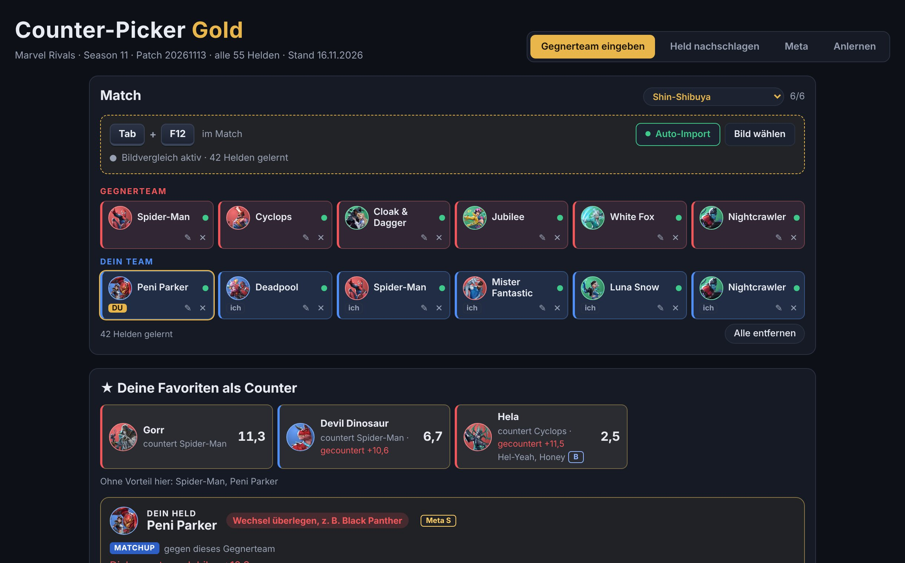

Drück im Match Tab + F12. Der Counter-Picker liest beide Teams aus deinem Steam-Screenshot und zeigt dir Counterpicks und Team-Ups mit deinen Mates.

Drei Schritte, kein Alt-Tab, kein Abtippen.
Installieren und öffnen. Den Steam-Screenshot-Ordner von Marvel Rivals findet die App selbst.
Tab-Übersicht offen halten und den normalen Steam-Screenshot machen. Der Rest passiert automatisch.
Beide Teams werden erkannt, dein Held ist markiert, die besten Counterpicks stehen oben – deine Favoriten zuerst.
Gebaut für Spieler, die schnell entscheiden wollen.
Liest alle 12 Helden aus der Tab-Übersicht. Unsichere Treffer markiert die App orange, mit Auswahl zum Korrigieren.
Counter-Werte, Schwierigkeit und Meta-Tier zu einem Score verrechnet. Deine Favoriten stehen ganz oben.
Alle Team-Ups der Season mit Tier. Picks, die mit deinem Team ein Team-Up haben, steigen im Ranking.
Matchup gegen das Gegnerteam, Fokus-Ziele, Kombos und Fähigkeiten auf einen Blick.
Jede Korrektur merkt sich die App. Neue Skins sind nach einmal Korrigieren bekannt – komplett offline.
Was du vor dem Download wissen solltest.
Die App liest nur die Screenshots, die Steam ohnehin speichert. Sie greift nicht in den Spielprozess ein, liest keinen Speicher aus und sendet keine Eingaben ans Spiel. Eine Garantie des Spieleherstellers gibt es trotzdem nicht.
Nein. Die Erkennung läuft per Bildvergleich auf deinem PC. Internet wird nur genutzt, um die aktuelle Meta-Tier-Liste zu laden.
Die App nutzt den Screenshot-Ordner von Steam. Wenn du in Steam eine andere Screenshot-Taste eingestellt hast, nimm einfach die.
Auf der Karte mit ✎ den richtigen Helden wählen. Die App merkt sich das Porträt und erkennt es beim nächsten Mal. Im Tab „Anlernen“ kannst du auch mehrere alte Screenshots auf einmal durchgehen.
Das liegt daran, dass die Setup-Datei (noch) nicht digital signiert ist. Mit „Weitere Informationen“ → „Trotzdem ausführen“ startest du die Installation.